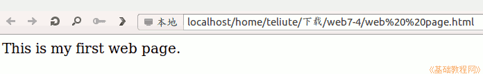

2011-2012 第二学期七年级文字处理和网页教学设计
作者：TeliuTe 来源：基础教程网
二十、学会网页编辑器 返回目录 下一课
（一）教学设计
1、学习目标：学会网页编辑器
2、注意事项：保存的文件名，后面的html别弄丢了
3、教学过程：
1）教师准备学案和板书；
2）学生整队进入，开机抄黑板上笔记；
3）教师讲解板书演示操作；
4）学生打指法、日志、完成操作；
5）教师打勾记录学生指法成绩，检查日志和操作；
注：学生抄完笔记就开始打指法、日志，老师讲完后再继续完成；
（二）板书设计(学生笔记)
第20课 学会网页编辑器
1、打开主文件夹、7-1、创建文件夹、web
2、校园网、软件下载、Linux、kompozer.7z
3、主文件夹、下载、瞄准点右键、解压缩
4、kompozer、点右键、剪切、7-3、粘贴
5、打开kompozer、运行、一句英文、保存到web、浏览
操作图示：

（三）课后记 2012-5-8 23:28
上周没上，感觉好久没上课
来了一个个野的有些，嗓子又疼了
--
看来还是得注意些，不必太执著适当地用语
说话的毛病得时时注意，要不后面会收拾不住
--
万事开头难，第一课就是不好上
都不知道会出现什么状况，出现什么问题
--
强调内容没有难度，但是绕弯比较多
碰到不会的就是该绕弯了，
--
学生着急想一下学会，这哪可能学习总是一步一步的
强调步骤既不要跳也不要漏，做对一步然后下一步
--
不学的坚决要训，第一课就不会，后面没法学了
拖后腿，不绕弯，这么简单第一步就不会的一通训
--
然后慢慢有做出来的，再商量又做出来
剩下没做出来的也着急了，急着也要做出来
--
刚期中考试完，估计考的不是很好
又留学生这些老师真是没法讲道理
--
下节课看怎么补，估计后面的课又要乱了
看看会是怎么样的，都是哪些学生哪些学科
--
这些学生也真是，现在的内容那么简单了
可还是那么多学不好的，天天为学习发愁
--
返回目录 下一课
本教程由86团学校TeliuTe制作|著作权所有
基础教程网：http://teliute.org/
美丽的校园……
转载和引用本站内容，请保留版权信息和本站链接。